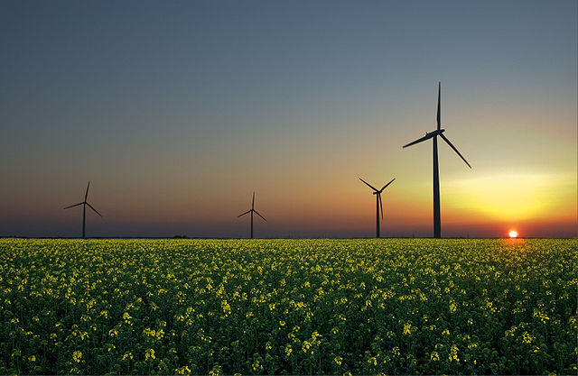
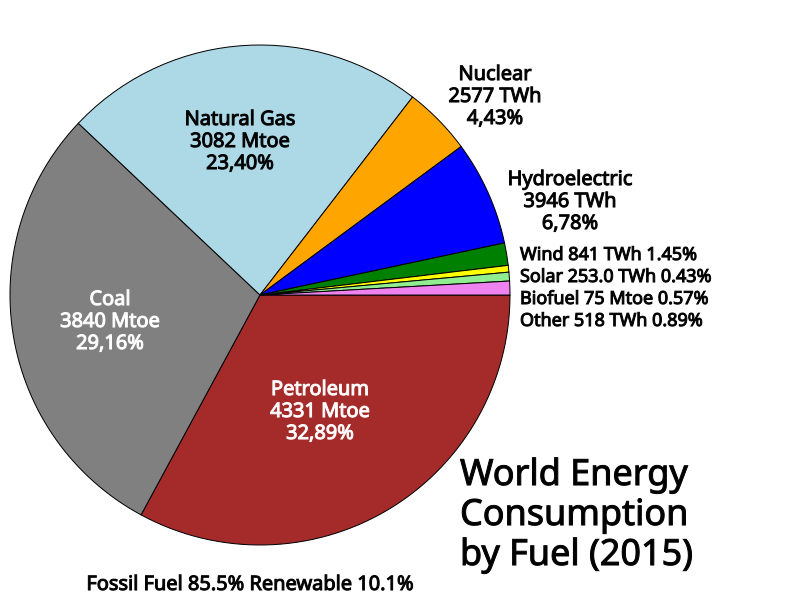

¿De dónde obtenemos la energía?
En general, podemos decir que las fuentes de energía son aquellos recursos naturales de los que podemos extraer algún tipo de energía para convertirla en algún otro tipo, utilizable por las personas.
Según se trate de recursos ilimitados o no, clasificamos estas energías primarias en:
- Renovables: solar, eólica, hidráulica y geotérmica
- Potencialmente renovables: biomasa y biocombustibles.
- No renovables: combustibles fósiles y uranio (nuclear).
En el caso de las potencialmente renovables debe cumplirse la condición de que su ritmo de consumo sea inferior al de su regeneración.

Fuentes de energía primaria

Estas formas de energía de la naturaleza se conocen como energía primaria, mientras que aquellas en las que la transformamos se denominan energías secundarias: electricidad y derivados del petróleo, principalmente.
En el gráfico adjunto puedes ver el porcentaje de contribución, al consumo mundial, de cada una de estas fuentes de energía, expresadas en Mtep, (Mtoe en inglés).